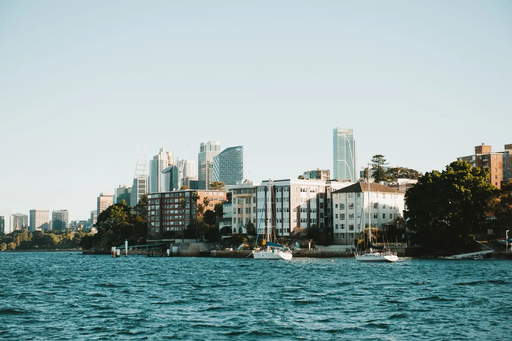
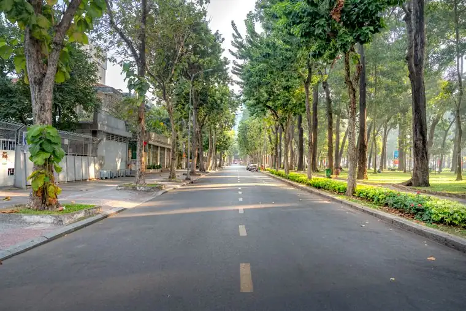
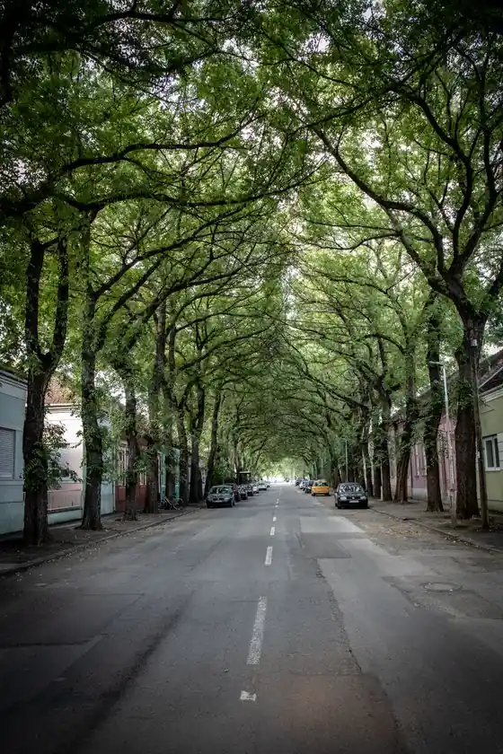
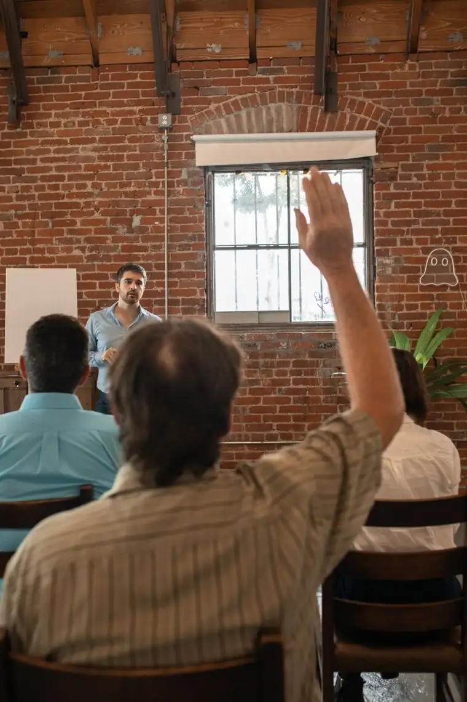
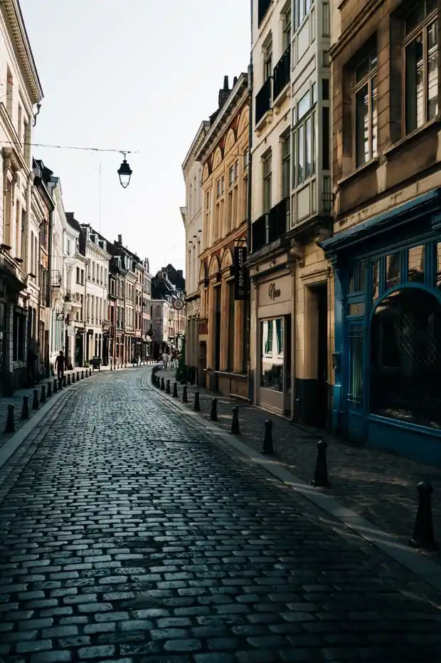
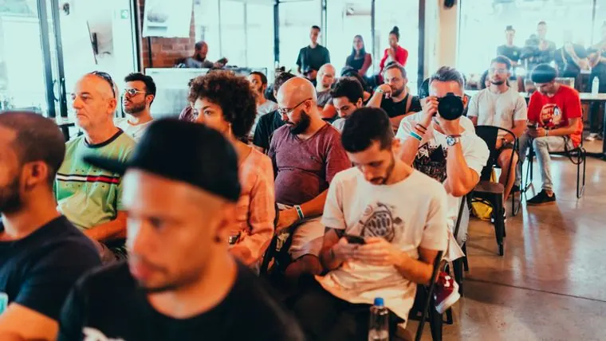

The big downtown survey
Help shape the heart of Westmere. Tell us how the centre should look, move and feel over the next ten years.
248 participants

Help shape the heart of Westmere. Tell us how the centre should look, move and feel over the next ten years.

Pin the places that matter to you and tell us how Market Square should change for people of every age.

Safer crossings, more greenery, calmer traffic? Have your say on the plans for Station Road.

Three neighbourhood teams working on a greener, cooler, more liveable Westmere — one district at a time.

€1.2M to allocate, and you decide. Browse the proposals and vote for the ones that should go ahead.
Where do residents agree on cleaning up the harbour and the river? Vote on the statements and find common ground.

Participation has closed. Read which proposals for the Old Town are being put into action.

Help plant the next generation of Westmere's street trees. 18 spots left across this season's planting days.

Finished three weeks ago. See the ideas residents chose to turn grey schoolyards into green, shaded play.